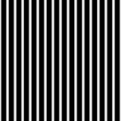
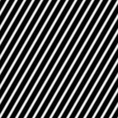
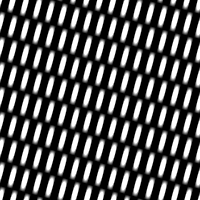
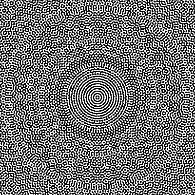
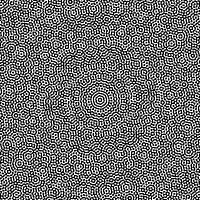
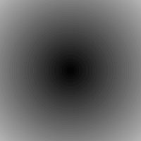
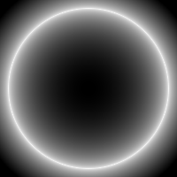
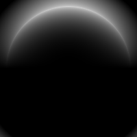
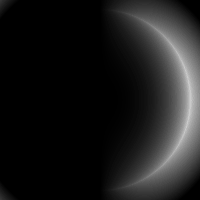
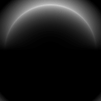

MLX-CL.TUTORIAL.DRAWINGS
Just draw something for fun
Table of Contents
1. About
This is some trivial implementation and explanation of XorDev's shader arts. 1
To run the example codes, you should load the package and switch to
mlx-cl.tutorial.drawings package.
2. Waves
2.1. Wave on x-axis
Consider a wave on x-axis: \(\mathrm{e}^{- \boldsymbol{k} \boldsymbol{x}}\), aka, \(\cos x\).
(->o (fc size :scale scale :center t) (cos (x *)) output)

Figure 1: pattern of \(\cos x\) (size = 200, scale = 2)
Explanation:
2.2. Matrix that performs rotation transformation
Considering the coordinates multiplied with the rotation matrix rotate2d:
\(\left(\begin{matrix} \cos \theta & -\sin \theta \\ \sin \theta & \cos \theta \end{matrix}\right) \left(\begin{matrix} x \\ y \end{matrix}\right)\), which is equal to appling a rotation transformation
on the original coordinates:
(->o (fc size :scale scale :center t)
(cos (x (matmul (rotate2d (radians 30))
(expand-dims * -1))))
output)

Figure 2: Rotation of \(30^{\circ}\) of coordinates
Explanation:
rotate2dgenerates the rotation matrixmatmulis taking on the last two axis (axis-2,-1) by default, so we should reshape thefcfrom(H W 2)into(H W 2 1)first (expand-dims)
2.3. Waves interference
If adding two waves together, it would generate a pattern of interference fringes:
(->o (fc size :scale scale :center t)
(+ (cos (x (matmul (rotate2d (radians 30))
(expand-dims * -1))))
(cos (x *)))
output)

Figure 3: Interference fringes of two waves
2.4. The Waves
So, if adding multiple waves all together:
(->o (loop :repeat repeat
:with r := (rotate2d (atanh (/ 6 8)))
:for p := (expand-dims (fc size :scale scale :center t) -1)
:then (@ r p)
:for x := (x p)
:for o := (cos x) :then (add o (cos x))
:finally (return (reshape o (list size size))))
output)

Figure 4: 40 waves adding together, each rotating \(\tan^{-1} \frac{6}{8}\) (size = 400, scale=0.8)
Note: you may try different repeating times to see how the wave pattern generates.
repeat = 10
Figure 5: 10 waves adding together, each rotating \(\tan^{-1} \frac{6}{8}\) (
size = 400,scale=0.8)repeat = 20
Figure 6: 20 waves adding together, each rotating \(\tan^{-1} \frac{6}{8}\) (
size = 400,scale=0.8)
The Original Shader
The original shader code is from Waves:
for(vec2 p=FC.xy-r*.5,i;i.x++<40.;o+=cos(p.x))p*=mat2(8,-6,6,8)*.1;
3. Equinox
3.1. Linear \(\Vert \boldsymbol{r} \Vert\)
Recall that the fc give us a 2-D matrix of coordinates \(\left(\begin{matrix} x \\ y \end{matrix}\right)\),
so if we take la:norm on the coordinates, we'd get \(\Vert \boldsymbol{r} \Vert = \sqrt{x^2 + y^2}\):
(->o (fc size :xmin (- scale) :xmax scale
:ymin (- scale) :ymax scale)
(la:norm * nil :axis -1)
output)
Figure 7: Image of \(\Vert \boldsymbol{r} \Vert\)
It's easy to spot that the center color value is 0, resulting black color.
And it "literally" transforms into outter white color linearly 2.
How does scale parameter affect the output?
(->frame (i 30 output :framerate 6)
(+ (* i ds) smin) ; scale
(fc size :xmin (- *) :xmax *
:ymin (- *) :ymax *)
(la:norm * nil :axis -1))

Figure 8: scale from 0.5 to 3.5, which controls the size of the sphere clipping radius
3.2. Sphere
Considering the shape of a sphere \(\boldsymbol{r}^2 = 1\), we could calculate the depth of the sphere by \(\sqrt{1 - r^2}\), where \(r\) is the linear \(\Vert r \Vert\) we calculate previously.
(let ((p (fc size :xmin (- scale) :xmax scale
:ymin (- scale) :ymax scale)))
(->o (la:norm p nil :axis -1) ; (linear-r)
(sqrt (abs (- 1 (square *)))) ; sqrt(1 - r^2)
(- 1 *) ; (invert-color)
output))

Figure 9: Image of sphere (with color inverted)
Explanation:
(abs (- 1 (square *))): useabsto avoid negativesqrt(- 1 *): inverse the color
3.3. Lighting along y-axis
(let ((p (fc size :xmin (- scale) :xmax scale
:ymin (- scale) :ymax scale)))
(->o (la:norm p nil :axis -1)
(- 1 (sqrt (abs (- 1 (square *)))))
(* (y p) *) ; (sphere-y)
(sin (+ offset *)) ; (sphere-offset)
output))

Figure 10: Sphere lighting on y-axis
Explanation:
(* (y p) *)multiply the sphere by(y p), which modifies the intensity of the sphere, resultingExample for not using y-axis direction
(let ((p (fc size :xmin (- scale) :xmax scale :ymin (- scale) :ymax scale))) (->frame (i 60 output :framerate 10) (dot p p) (- 1 (sqrt (abs (- 1 *)))) (* (dot (dirvec2 (* dt i)) p) *) ; (sphere-dot-dirvec2) (sin (+ offset *))))
Figure 11: Animation of different
theta((dot (dirvec2 (* dt i)) p))Note that
(dot (dirvec2 #|theta|#) p)generates patterns like(y p).(y p)is equal to calling(dot (dirvec2 (radians 90)) p).(sin (+ offset *)): theoffsetmodifys the center position of colors, andsinmakes sure that the intensity of color is periodic.How
offsetaffects the result(let ((p (fc size :xmin (- scale) :xmax scale :ymin (- scale) :ymax scale))) (->frame (i 60 output :framerate 10) (dot p p) (- 1 (sqrt (abs (- 1 *)))) (* (y p) *) ; (dot dirvec2 sphere) (sin (+ (* dt i) *))))
Figure 12: Animation of different
offset((* dt i))Note that \(\sin \theta < 0\ \mathrm{if}\ \theta \in [\pi, 2 \pi]\), which results in black image.
3.4. The Equinox
An colorful RGB image can be considered as mixing of R, G, B channel grayscale images 3. Thus we could generate a colorful pattern:
(let* ((p (fc size :xmin (- scale) :xmax scale
:ymin (- scale) :ymax scale))
(sphere (- 1 (sqrt (abs (- 1 (dot p p))))))
(light (* (dot (dirvec2 (radians theta)) p) sphere))
(rgb (reshape (repeat light 3) (list size size 3)))) ; (equinox-rgb)
(->frame (i 60 output :framerate 10)
(+ (* dt i) rgb #(4 5 6)) ; (equinox-pharse)
(sin *)))

Figure 13: The colored animation of Equinox
Explanation
(reshape (repeat light 3) (list size size 3))thelightis a 2-D grayscale image-likemlx-array, repeating it triple times and reshape it like a RGB image of shape(H W 3)(+ (* dt i) rgb #(4 5 6))the#(4 5 6)is the pharse value \(\phi\) in \(\sin (x + \phi)\), this will ensure that R, G, B colors are starting with different initial pharseNote if you change RGB pharse to
#(0 0 0)(same pharse), you would see a black and white sphere animation – not so cool.
The Original Shader
The original shader code is from Equinox:
vec2 p=(FC.xy*2.-r)/r.y; o=sin(t+p.y*(1.-sqrt(abs(1.-dot(p,p))))+vec4(4,5,6,0));
4. Appendix
4.1. Package
This tutorial is based on mlx-cl.tutorial.drawings package,
which is generated by org-tangle.
The package depends on some additional external packages: cl-str.
You could load them via:
(ql:quickload '(:str))
The drawings.lisp overview
;;;; drawings.lisp --- Just draw something for fun
(uiop:define-package #:mlx-cl.tutorial.drawings
(:use :mlx-cl)
(:local-nicknames (:la :mlx-cl.linalg)))
(in-package :mlx-cl.tutorial.drawings)
;;; Utils
(eval-when (:compile-toplevel :load-toplevel :execute)
(defun filter-plist (plist &rest keys)
"Remove KEYS from PLIST.
Return a new plist with KEYS removed. "
(loop :for (key val) :on plist :by #'cddr
:if (not (member key keys))
:collect key :and :collect val))
)
;;; Creating `mlx-array'
(defun fc (size &key (w size) (h size) (scale 1) (center nil)
(xmin (if center (/ w -2 scale) 0))
(xmax (if center (/ w 2 scale) scale))
(ymin (if center (/ h -2 scale) 0))
(ymax (if center (/ h 2 scale) scale)))
"Return gl_FragCoord (H W (x y)=2). "
(destructuring-bind (x y)
(meshgrid (linspace xmin xmax w :dtype :float32)
(linspace ymax ymin h :dtype :float32))
(stack x y :axis 2)))
(defun rotate2d (theta)
"Generate a 2-D vector rotation matrix. "
(stack (stack (cos theta) (- (sin theta)))
(stack (sin theta) (cos theta))))
;;; Normalize `mlx-array'
(defun ensure-mlx-array-as-rgb-img (arr)
"Ensure input ARR is (H W 3) `mlx-array' of dtype `:uint8'.
Return the formatted `mlx-array'.
Rule:
1. ARR :uint8 -> ARR
ARR :float32 -> ARR*255
2. ARR (H W) -> (H W 3) ; repeat 3
ARR (H W 3) -> ARR
ARR (H W 4) -> (H W 3) ; RGB*A + RGB*(1-A)
"
(declare (type mlx-array arr))
(->* (ecase (dtype arr)
(:uint8 (/ arr 255.0))
(:float32 arr))
(ecase (dim *)
(2 (reshape (repeat * 3) `(,@(shape *) 3)))
(3 (ecase (len * 2)
(1 (reshape (repeat * 3) `(,@(shape * :axes #(0 1)) 3)))
(3 arr)
(4 (destructuring-bind (r g b a) (split * 4 :axis 2)
(->* (clip a :max 1 :min 0)
(stack (* r *)
(* g *)
(* b *)
:axis 2)
(squeeze *)))))))
(as-dtype (* * 255) :uint8)))
(defmacro x (fc)
"Get X part of FC (gl_FragCoord.x). "
`(at ,fc :* :* 0))
(defmacro y (fc)
"Get Y part of FC (gl_FragCoord.y). "
`(at ,fc :* :* 1))
;;; Arrows
(defmacro ->o (expr &body bodys-output)
"Enhanced `->*' arrow to write image to OUTPUT.
Return OUTPUT file path.
Syntax:
(->o EXPRS...
OUTPUT)
Parameters:
+ EXPRS: chained expressions, see `->*'
+ OUTPUT: image output path"
`(->* ,expr
,@(butlast bodys-output)
(ensure-mlx-array-as-rgb-img *)
(save * :output ,@(last bodys-output))))
(defmacro ->frame ((i frames output &rest keys
&key (tmp "./tmp/animated%d.ppm")
&allow-other-keys)
&body body)
"Enhanced `->*' arrow to write image of frames to OUTPUT as animation.
Return OUTPUT file path.
Syntax:
(->frame (I FRAMES OUTPUT &key) &body)
Parameters:
+ I: variable bind of current frame id (starting from 0)
+ FRAMES: number of total frames
+ OUTPUT: path of output
+ TMP: pattern of temporary frame output (default \"./tmp/animated%2d.ppm\")
the format rules should follow FFMPEG file input formatting convention
+ DEBUG: see `ffmpeg'
"
(declare (type symbol i))
(let ((res (gensym "RES"))
(pat (gensym "PAT"))
(out (gensym "OUT")))
`(let ((,res ())
(,pat (uiop:native-namestring ,tmp))
(,out (uiop:native-namestring ,output)))
(unwind-protect
(dotimes (,i ,frames (ffmpeg ,pat ,out ,@(filter-plist keys :tmp)))
(->o ,@body
(let ((tmp (ffmpeg-fmt ,pat ,i)))
(push tmp ,res)
tmp))
;; this is used to avoid cache expanding too fast
(gc-all))
(dolist (tmp ,res) (uiop:delete-file-if-exists tmp))))))
;;;; drawings.lisp ends here
You could find the full script at drawings.lisp.
4.1.1. Utils
filter-plist(defun filter-plist (plist &rest keys) "Remove KEYS from PLIST. Return a new plist with KEYS removed. " (loop :for (key val) :on plist :by #'cddr :if (not (member key keys)) :collect key :and :collect val))
4.1.2. Creating mlx-array
fcforgl_FragCoord(defun fc (size &key (w size) (h size) (scale 1) (center nil) (xmin (if center (/ w -2 scale) 0)) (xmax (if center (/ w 2 scale) scale)) (ymin (if center (/ h -2 scale) 0)) (ymax (if center (/ h 2 scale) scale))) "Return gl_FragCoord (H W (x y)=2). " (destructuring-bind (x y) (meshgrid (linspace xmin xmax w :dtype :float32) (linspace ymax ymin h :dtype :float32)) (stack x y :axis 2)))Explanation:
(linspace start stop &optional num)return amlx-arrayof(NUM)shape with elements distributed linearly fromstarttostop(meshgrid arrays... &key indexing spares)generates multidimensional coordinate grids, by default it use:xyas indexing methodgl_FragCoordis origin at left-bottom, so you should notice that for y-coordinate, it's(linspace ymax ymin h)(reversed asmlx-arrayis origin at left-top)
Rotation Matrix \(\left(\begin{matrix} \cos \theta & -\sin \theta \\ \sin \theta & \cos \theta \end{matrix}\right)\)
(defun rotate2d (theta) "Generate a 2-D vector rotation matrix. " (stack (stack (cos theta) (- (sin theta))) (stack (sin theta) (cos theta))))See 2 for an example of "rotation".
Rotated base vector for direction
(defun dirvec2 (theta) "Rotate #(1 0) by THETA (radians). " (stack (cos theta) (sin theta)))
4.1.3. Normalize mlx-array
as RGB
mlx-array(H W C)(defun ensure-mlx-array-as-rgb-img (arr) "Ensure input ARR is (H W 3) `mlx-array' of dtype `:uint8'. Return the formatted `mlx-array'. Rule: 1. ARR :uint8 -> ARR ARR :float32 -> ARR*255 2. ARR (H W) -> (H W 3) ; repeat 3 ARR (H W 3) -> ARR ARR (H W 4) -> (H W 3) ; RGB*A + RGB*(1-A) " (declare (type mlx-array arr)) (->* (ecase (dtype arr) (:uint8 (/ arr 255.0)) (:float32 arr)) (ecase (dim *) (2 (reshape (repeat * 3) `(,@(shape *) 3))) (3 (ecase (len * 2) (1 (reshape (repeat * 3) `(,@(shape * :axes #(0 1)) 3))) (3 arr) (4 (destructuring-bind (r g b a) (split * 4 :axis 2) (->* (clip a :max 1 :min 0) (stack (* r *) (* g *) (* b *) :axis 2) (squeeze *))))))) (as-dtype (* * 255) :uint8)))Getting subpart of
mlx-array(defmacro x (fc) "Get X part of FC (gl_FragCoord.x). " `(at ,fc :* :* 0)) (defmacro y (fc) "Get Y part of FC (gl_FragCoord.y). " `(at ,fc :* :* 1))
4.1.4. Arrows
chain-calling into single image
(defmacro ->o (expr &body bodys-output) "Enhanced `->*' arrow to write image to OUTPUT. Return OUTPUT file path. Syntax: (->o EXPRS... OUTPUT) Parameters: + EXPRS: chained expressions, see `->*' + OUTPUT: image output path" `(->* ,expr ,@(butlast bodys-output) (ensure-mlx-array-as-rgb-img *) (save * :output ,@(last bodys-output))))chain-calling into animation
(defmacro ->frame ((i frames output &rest keys &key (tmp "./tmp/animated%d.ppm") &allow-other-keys) &body body) "Enhanced `->*' arrow to write image of frames to OUTPUT as animation. Return OUTPUT file path. Syntax: (->frame (I FRAMES OUTPUT &key) &body) Parameters: + I: variable bind of current frame id (starting from 0) + FRAMES: number of total frames + OUTPUT: path of output + TMP: pattern of temporary frame output (default \"./tmp/animated%2d.ppm\") the format rules should follow FFMPEG file input formatting convention + DEBUG: see `ffmpeg' " (declare (type symbol i)) (let ((res (gensym "RES")) (pat (gensym "PAT")) (out (gensym "OUT"))) `(let ((,res ()) (,pat (uiop:native-namestring ,tmp)) (,out (uiop:native-namestring ,output))) (unwind-protect (dotimes (,i ,frames (ffmpeg ,pat ,out ,@(filter-plist keys :tmp))) (->o ,@body (let ((tmp (ffmpeg-fmt ,pat ,i))) (push tmp ,res) tmp)) ;; this is used to avoid cache expanding too fast (gc-all)) (dolist (tmp ,res) (uiop:delete-file-if-exists tmp))))))
4.1.5. FFMPEG
Call FFMPEG command
(defparameter *ffmpeg-vfs* (make-hash-table :test 'cl:equal) "Video filter of FFMPEG. Key: file extension Val: string as vf") (defparameter *ffmpeg-vf* "") (defun ffmpeg-vf (ext) (gethash ext *ffmpeg-vfs* *ffmpeg-vf*)) (defun def-ffmpeg-vf (ext vf) (setf (gethash ext *ffmpeg-vfs*) vf)) (defun ffmpeg (input output &rest keys &key debug (vf (ffmpeg-vf (pathname-type output))) (framerate 6) &allow-other-keys) "Call external FFMPEG command. Parameters: + INPUT: FFMPEG input + OUTPUT: FFMPEG output + DEBUG: t for debug, or `:debug-only' + other keys will be used for FFMPEG parameters " (let ((cmd `("ffmpeg" "-y" ,@(when framerate `("-framerate" ,(format nil "~A" framerate))) "-i" ,(uiop:native-namestring input) "-vf" ,vf ,@(loop :for (key val) :on (filter-plist keys :debug) :by #'cddr :collect (format nil "-~(~A~)" key) :collect (format nil "~A" val)) ,(uiop:native-namestring output)))) (cond ((eql debug t) (uiop:run-program (print cmd))) ((eql debug :debug-only) (print cmd)) (t (uiop:run-program cmd))) output)) (def-ffmpeg-vf "gif" (concatenate 'string "split[s0][s1];" "[s0]palettegen=max_colors=64[p];" "[s1][p]paletteuse=dither=sierra2_4a"))FFMPEG input file formating
(defun decode-ffmpeg-fmt (string) "Decode STRING as Lisp `format' control string. Return the control string. " (declare (type string string)) (let ((pivot 0)) (with-output-to-string (fmt) (ppcre:do-matches (start end "%(%|\\d*[dD])" string) (write-string (subseq string pivot start) fmt) (case (aref string (1+ start)) (#\% (write-char #\% fmt)) ((#\d #\D) (write-string "~D" fmt)) (#\0 (format fmt "~~~A,'0D" (subseq string (2+ start) (1- end)))) (otherwise (format fmt "~~~AD" (subseq string (1+ start) (1- end))))) (setf pivot end)) (write-string (subseq string pivot) fmt)))) (defun ffmpeg-fmt (control-string &rest args) "Format using FFMPEG CONTROL-STRING and ARGS. Return a formatted string. " (apply #'format nil (decode-ffmpeg-fmt control-string) args))
4.2. Reference
Footnotes:
this can also serve as a test for MLX-CL library at some points…
In short, it works terribly great: the MLX library use a cache method for the
data exchange. So if you frequently calling massive data exchange without calling
mlx:clear-cache, it would easily eat up tons of memory. And thus i lost my previous
work of this tutorial… ha, ha, … ha. (not so funny)
And another problem is that if frequently calling data exchange, which means coping
data twice in both MLX (FFI) and Lisp. That's tooooooo mean to my poor M2 (8GB) Air.
Currently (at the time I wrote this tutorial, maybe later in the future), you may need
to call mlx:clear-cache manually to free the cache. Seems to be that MLX is not so
actively freeing up it's memory?
there's a few notes on this:
if you read the ensure-mlx-array-as-rgb-img implementation,
you would notice that for the mlx-array of shape (H W 1),
I just repeat it triple times to generate RGB color channels,
which is often called linear RGB color model. It's easy to implement,
but not a model that correctly matches with human's eye – the value
is linearly increasing, while your eye is not thinking so.
Well, it would not be too hard to implement :srgb colorspace in mlx-cl.image.
Since this tutorial is not based on mlx-cl/image subsystem
I haven't finished that yet actually, just using RGB is fine.
Oh, all most forgot, if you spot the corner of the output image, which should be \(\Vert \boldsymbol{r} \Vert = \sqrt{2} \approx 1.414 > 1\). So the value is clipped while generating image output.
You could view the documentation of mlx-cl.image.